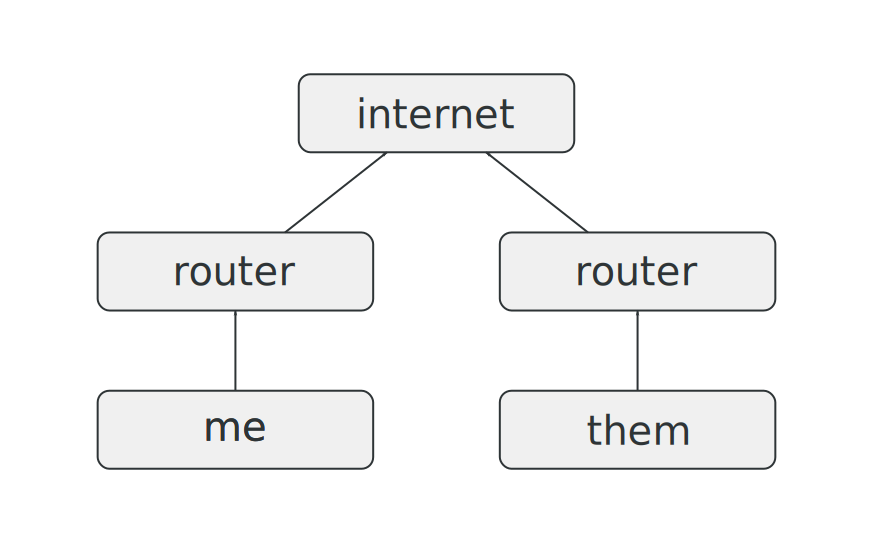
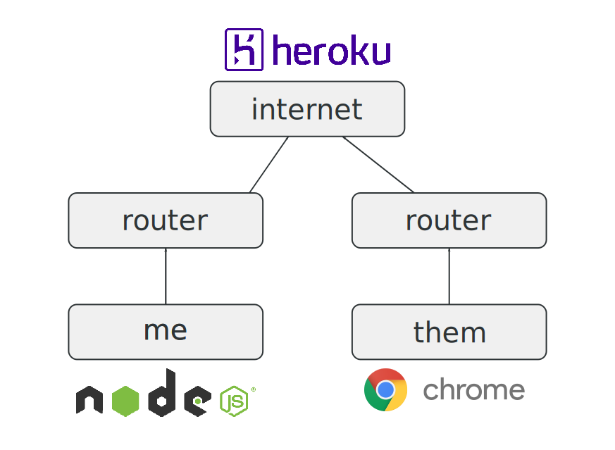
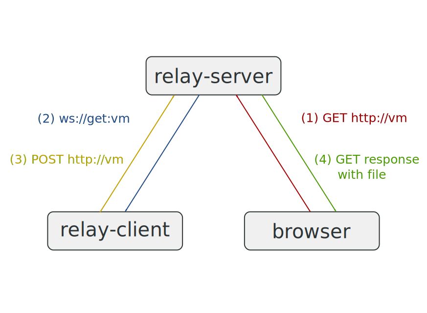

class: center, middle # node.js --- ## me - Chris Badahdah - https://github.com/djblue - https://djblue.github.io <img class="me" src="https://avatars1.githubusercontent.com/u/1986211?v=3&s=460"/> --- ## assumptions knowledge of: - http - get requests - post requests - http headers - json - basic javascript syntax - method calls - variable assignment --- ## problem I want to transfer a large vm image to a friend. Constraints: - too large to upload and download - on separate networks - no direct connection - don't want to spend any money - no paid services like mega, dropbox, google drive - free hosting service? sure - can't or don't want to configure router - no port forwarding - both have access to the internet --- ## diagrams  --- ## diagrams  --- ## diagrams  --- ## node.js - built on chrome's v8 js engine - single threaded - highly concurrent - asynchronous non-blocking i/o - specializes in building network application - great http support - streams! <img class="bench" src="http://1.bp.blogspot.com/-vkcbXu-R9-s/TWDDkNSiTHI/AAAAAAAADns/rL6gLszSrqc/s1600/node_js%2Bbenchmarks.png"/> --- ## synchronous vs asynchronous #### synchronous ```javascript console.log('hello'); sleep(1000); console.log('world'); ``` #### asynchronous - asynchronous functions and callbacks allow concurrency in a single threaded environment ```javascript // examples/async.js setTimeout(function () { console.log('world'); }, 1000); console.log('hello'); ``` --- ## stream basics - `process.stdin` is a read stream - on `data` event - `pause` and `resume` methods - `process.stdout` is a write stream - write method - efficient way of dealing with large files ```javascript // examples/echo-cli.js var stdin = process.stdin; var stdout = process.stdout; stdin.resume(); stdout.write('echo-cli v1\n'); stdin.on('data', function (data) { stdout.write(data.length + ': '); }); stdin.pipe(stdout); ``` --- ## http - `require` is how you import in node - can return any valid javascript value - use the environment to pull configuration - http module makes extensive use of streams ```javascript // examples/echo-server.js var http = require('http'); var server = http.createServer(function (req, res) { req.pipe(res); }); server.listen(process.env.PORT || 3000); ``` ```bash $ curl -X POST http://localhost:3000 --data 'hello, world' ``` --- ## lets go ```bash $ mkdir node-relay && cd node-relay ``` ```bash $ mkdir lib bin test ``` - lib - application scripts in here - bin - executable scripts go here - test - test scripts in here ```bash $ npm init ``` --- ## npm - node package manager - comes with node.js - local by default - puts packages into `node_modules` - `-g` to install something globally - recursively defined dependencies - no dependency version conflict - anarchy ```bash $ npm ls ``` ```bash ├─┬ first-package@1.0.0 │ └── third-package@1.0.0 ├─┬ second-package@1.0.0 │ └── third-package@2.0.0 └── other-package@1.0.0 ``` --- ## package.json - json manifest of project - i'll make use of `scripts` attribute later ```javascript { "name": "my-package", "version": "1.0.0", "description": "short description", "main": "index.js", "dependencies": {}, "devDependencies": {}, "scripts": {}, "bin": {}, "author": "me", "license": "MIT" } ``` --- ## relay server - skeleton - forwards requests to me - streams vm image back to my friend ```bash $ npm i --save express socket.io ``` ```javascript // lib/relay-server.js var express = require('express'); var socketio = require('socket.io'); var socket = null; var app = express(); app.get('/', getVm); app.post('/', postVm); var port = process.env.PORT || 3000; var server = app.listen(port, function () { console.log('relay server listening at http://localhost:' + port); }); var io = socketio.listen(server); io.on('connection', function (s) { socket = s; }); io.on('disconnect', function () { socket = null; }); ``` --- ## relay server - get endpoint - gets triggered when my friend tries to download the vm ```javascript // lib/relay-server.js var users = []; var getVm = function (req, res) { if (socket !== null) { // ping the relay client that is connected socket.emit('get:vm'); // push into queue users.push(res); } else { // a relay-client has not connected res.status(502).end('502 Bad Gateway'); } }; ``` --- ## relay server - post endpoint - responds to my friend's `GET` request with the `POST` body ```javascript // lib/relay-server.js var postVm = function (req, res) { var user = users.shift(); // like pop front or dequeue if (user !== undefined) { // stream the body directly to the user user.set(req.headers); req.pipe(user); req.on('end', function () { res.status(200).end(); }); } else { res.status(500).end(); } }; ``` --- ## relay server - logging middleware - applied in the order added (think interceptor) - easy to add your own - common use cases: - body parsing - authentication - authorization - logging ```javascript app.use(function (req, res, next) { }); // middleware interface ``` ```bash $ npm i --save morgan ``` ```javascript // lib/relay-server.js var morgan = require('morgan'); app.use(morgan('dev')); ``` --- ## start the server - tells npm how to start the relay server - paas such as heroku makes use of this convention when trying to start your app - put anywhere in `package.json` ```javascript { "scripts": { "start": "node lib/relay-server" } } ``` ```bash $ npm start ``` --- ## relay client - skeleton - makes a web sockets connection to relay server - waits to be pingged by relay server - pushes vm image file back to relay server - exports is how you export stuff from a script ```bash $ npm i --save socket.io-client ``` ```javascript // lib/relay-client.js var fs = require('fs'); var path = require('path'); var io = require('socket.io-client'); module.exports = function (relayUrl, filePath) { var pth = path.resolve(process.cwd(), filePath); if (!fs.existsSync(pth)) { throw Error('file does not exist'); } var socket = io(relayUrl, { reconnect: true }); socket.on('connect', function () { console.log('connected to ' + relayUrl); }); socket.on('get:vm', pushFile(relayUrl, pth)); }; ``` --- ## relay client - uploading the file - pushed local file stream upto relay server ```javascript var url = require('url'); var http = require('http'); // relayUrl - url of relay server // filePath - local path of file to upload var pushFile = function(relayUrl, filePath) { var opts = url.parse(relayUrl); opts.method = 'POST'; opts.headers = { 'Content-Length': fs.statSync(filePath).size, 'Content-Disposition': 'attachment; filename="' + path.basename(filePath) + '"' }; return function () { var req = http.request(opts, function (res) { res.on('end', function () { console.log('done!'); }); }); fs.createReadStream(filePath).pipe(req); }; }; ``` --- ## some tests please - `tape` is one of many testing libraries for javascript ```bash $ npm i --save-dev tape jshint ``` ```javascript // test/relay.js var test = require('tape'); var server = 'http://localhost:3000'; var client = require('../lib/relay-client'); test('setup', function (t) { require('../lib/relay-server'); client(server, __filename); t.end(); }); // download test test('tear down', function (t) { t.end(); process.exit(); }); ``` --- ## download test - need to buffer response body because it's a stream ```javascript var http = require('http'); var url = require('url'); var fs = require('fs'); test('downloading a file', function (t) { var opts = url.parse(server); opts.method = 'GET'; http.request(opts, function (res) { var body = ''; res.on('data', function (data) { body += data; }); res.on('end', function () { t.equals(body, String(fs.readFileSync(__filename))); t.end(); }); }).end(); }); ``` --- ## running tests - setup linting and integration tests - ci servers like travis-ci make use of this convention for testing - put anywhere in `package.json` ```javascript { "scripts": { "pretest": "jshint lib bin test", "test": "tape test/*.js" } } ``` ```bash $ npm test ``` --- ## ./bin - make your script a command line utility - gets sym-linked on `npm i -g` - make sure your script has a `#!/usr/bin/env node` as the first line. - make sure your script is executable ```javascript #!/usr/bin/env node var client = require('../lib/relay-client'); // process.argv[0] is node // process.argv[1] is the script name var relay = process.argv[2]; var file = process.argv[3]; client(relay, file); ``` ```bash $ chmod +x bin/share ``` --- ## test package install - `npm ln` will do the sym-link part of the global install ```javascript { "bin": { "share": "bin/share" } } ``` ```bash $ npm ln ``` ```bash $ share package.json ``` --- ## push to npm - to publish to npm you need to setup an account - you can publish as many modules as you like - if a name is already taken, too bad - bad practice to publish the same version of a package more than once, just bump the version. - https://www.npmjs.com/package/node-relay ```bash $ npm publish ``` ```bash $ npm i -g node-relay ``` --- ## deploy to heroku - heroku toolbelt lets you easily setup a new app - deploy is done with a `git push` ```bash $ heroku create ``` ```bash $ git push heroku master ``` --- ## improvements - security - relay arbitrary http traffic - better error handling - multiplexing multiple clients - based on subdomains - based on headers - based on path - more tests - support range headers for video streaming - heroku button for auto deployment of `relay-server` --- class: center, middle ## Thanks <img class="bg" src="http://www.clipartbest.com/cliparts/aTq/oMj/aTqoMj6bc.jpeg" /> --- ## CSSDay CSSDay is an all day event for experienced developers to learn more about CSS. Already know CSS? Perfect, you're our target audience. Come level-up and make sense of the parts you struggle with. We'll have intermediate to advanced talks from CSS experts all day! The event is <b>December 5th (Saturday) at Infusionsoft</b> in Chandler. See speakers like keynote Jonathan Snook, the author of the SMACSS methodology, talk about modular CSS and many more modern CSS topics. There will also be a CSS contest which allows you to show your skills in only 15 minutes! Lunch is provided, and the event is only <b>$35</b> for a limited time Use code <b>"ilovecss"</b> for a 20% discount <b>http://cssday.io</b> @cssdayio